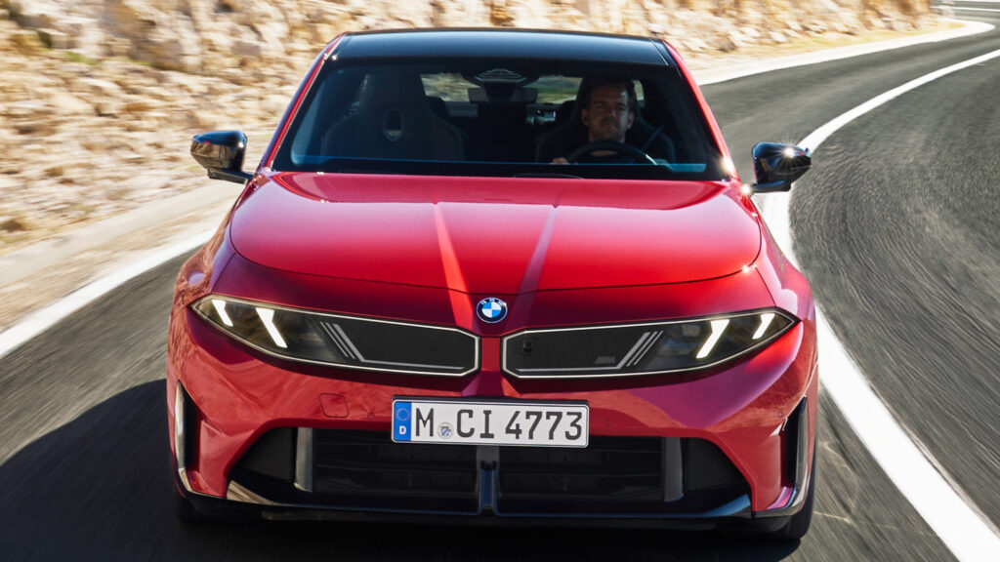

for DC Advanced UX Team.Vivi · Yohan · Libby · Lim Jisu · Katey · Anna
Back Issue

Cockpit
BMW 3 Series G50: a 3,340×1,440 screen and Alexa+ inside
BMW revealed the eighth-generation 3 Series on 30 September; US deliveries start in Q1 2027. The cabin is the Neue Klasse layout: Panoramic Vision along the base of the windscreen, an optional 3D head-up display and a 17.9-inch central display angled at the driver, matrix-backlit at 3,340 × 1,440 pixels. Operating System X on AOSP takes touch, haptic and voice input and folds in Amazon Alexa+; the wheel has a central upper spoke with multifunction buttons. Four colour-and-material schemes; the M350 xDrive opens at 437 hp.
宝马9月30日发布第八代3系，美国2027年一季度交付。座舱沿用新世代布局：风挡下沿的全景视觉投影带、选装3D抬头显示，以及一块朝向驾驶者倾斜的17.9英寸中央屏，矩阵背光、分辨率3,340×1,440。基于AOSP的Operating System X支持触控、实体按键与语音，并接入Amazon Alexa+；新方向盘上部为单中央辐条，集成多功能按键。内饰提供四套配色与材质方案，首发M350 xDrive为437马力。
BMW가 9월 30일 8세대 3시리즈를 공개했다. 미국 인도는 2027년 1분기다. 실내는 노이에 클라쎄 배치를 따른다. 앞유리 아래 파노라믹 비전, 선택 사양 3D 헤드업 디스플레이, 운전자를 향해 기울어진 17.9인치 중앙 화면이 있으며 화면은 매트릭스 백라이트에 3,340×1,440 해상도다. AOSP 기반 오퍼레이팅 시스템 X는 터치, 물리 버튼, 음성 입력을 받고 아마존 알렉사+를 품는다. 새 스티어링 휠은 위쪽 중앙 스포크에 다기능 버튼을 모았다. 실내 색상·소재 조합은 네 가지이며, M350 xDrive는 437마력이다.
Lucid Air gets Gravity's UX 3.0: cards on the cluster
Lucid's software 2.11.0, rolling out from 29 September, brings the Gravity SUV's UX 3.0 to the Air. The curved Cockpit Panel behind the wheel gets a swipeable card-based Home: music, nearby chargers and one-tap routing to home or work as cards, with CarPlay and Android Auto spanning the whole right side. The vertical Pilot Panel gains a pull-down Quick Controls menu; navigation is redesigned with a dual-screen layout, Auto Dark Mode and EV routing that filters by charging network and arrival range. Free on 2025-and-newer Airs; 2022–2024 cars need a $950 processor swap.
루시드가 9월 29일부터 소프트웨어 2.11.0을 배포하며 그래비티 SUV의 UX 3.0을 에어에 옮겼다. 스티어링 휠 뒤 곡면 콕핏 패널은 옆으로 넘기는 카드형 홈 화면이 됐다. 음악, 근처 충전소, 집이나 회사로 한 번에 경로 설정 등이 카드로 놓이고, 카플레이와 안드로이드 오토는 화면 오른쪽 절반 전체를 쓴다. 세로형 파일럿 패널에는 내려서 여는 퀵 컨트롤 메뉴가 생겼고, 내비게이션은 2화면 구성, 자동 다크 모드, 충전 네트워크와 도착 잔여 주행거리로 거르는 EV 경로 기능을 갖췄다. 2025년형 이후는 무료이며 2022~2024년형은 950달러에 프로세서를 교체해야 한다.
Witcher 3 Remastered: path tracing, a redrawn skill tree
CD Projekt Red's remaster of The Witcher 3 shipped on 29 September as a free upgrade for owners, on PC, current consoles and Nintendo Switch 2. On PC it expands ray tracing to path tracing with better indirect light and reflections; Geralt's movement, climbing and finishers are re-animated. The interface is reworked too: a skill tree with clearer prerequisites and three ranks, map markers for unfinished quests, meditation that shows time passing, transmog that separates armour looks from stats, and a Photo Mode with placement tools. The Switch 2 build targets 30–40 fps.
CD Projekt Red的《巫师3》重制版9月29日上线，老玩家免费升级，覆盖PC、现世代主机和Switch 2。PC端把光线追踪扩展到路径追踪，间接光与反射更准，杰洛特的移动、攀爬和处决动作全部重做。界面同样重画：技能树改为三阶并标明前置条件，地图为未完成任务加了标记，冥想时能看到时间流逝，幻化系统让装备外观与属性分离，拍照模式新增摆放工具。Switch 2版本目标30至40帧。
CD 프로젝트 레드의 위쳐 3 리마스터가 9월 29일 기존 소유자에게 무료 업그레이드로 나왔다. PC, 현세대 콘솔, 닌텐도 스위치 2를 지원한다. PC에서는 레이 트레이싱을 패스 트레이싱으로 넓혀 간접광과 반사가 좋아졌고, 게롤트의 이동과 등반, 마무리 동작을 다시 애니메이션했다. 인터페이스도 손봤다. 스킬 트리는 선행 조건이 보이는 3단계 구조가 됐고, 지도에는 미완료 퀘스트 표시가 생겼으며, 명상 중 시간 흐름이 보이고, 장비 외형과 능력치를 분리하는 변형 기능과 배치 도구를 갖춘 포토 모드가 추가됐다. 스위치 2 버전은 30~40fps를 목표로 한다.
Adobe's ChatGPT plugin grows a side panel with sliders
From 29 September the Adobe plugin in ChatGPT opens a side-panel editor instead of only returning a regenerated file. Ask for an image or design edit and Photoshop or Express controls appear in context: a brush to select an object, sliders for hue, saturation, contrast and brightness, surfaced according to the edit you asked for. In Acrobat PDFs you can rewrite text, highlight passages and annotate inside the chat, and what you select flows back into the conversation as context. It rolls out globally on ChatGPT web and app and was announced at OpenAI DevDay.
9월 29일부터 챗GPT 안의 어도비 플러그인은 다시 생성한 파일만 돌려주지 않고 사이드 패널 편집기를 연다. 이미지나 디자인 수정을 요청하면 포토샵 또는 익스프레스의 컨트롤이 맥락에 맞게 나타난다. 브러시로 개체를 선택하고 색조, 채도, 대비, 밝기 슬라이더를 움직이며, 어떤 컨트롤이 뜨는지는 요청한 편집에 따라 달라진다. 아크로뱃 PDF에서는 채팅 안에서 글을 고치고 구절을 강조하고 주석을 달 수 있으며, 선택한 부분은 대화의 맥락으로 되돌아간다. 오픈AI 데브데이에서 발표됐고 챗GPT 웹과 앱에 전 세계 배포된다.
Cassette: Displaay's 'mixtape' grotesk with a Mono axis
Displaay Type Foundry released Cassette on 25 September, designed by Martin Vácha with Andrea Biggio and Marek Čuban. It is built from letterforms left over from Saans, Roobert and Haffer: a cold, monolinear, constructed grotesk with no ink traps. Three subfamilies, Cassette, SemiMono and Mono, span 21 weights and 42 styles with italics, and a variable font carries Weight, Slant and Mono axes so a word can slide from proportional to monospaced. 14 stylistic sets, 10 figure sets and 83-plus languages; €65 a style, €655 for everything, free trials.
디스플레이 타입 파운드리가 9월 25일 카세트를 냈다. 마르틴 바하가 디자인하고 안드레아 비조와 마레크 추반이 도왔다. 산스, 루베르트, 하퍼 작업에서 쓰지 않고 남긴 글자꼴을 모아 만든, 차갑고 단선적이며 구축적인 그로테스크로 잉크 트랩이 없다. 카세트, 세미모노, 모노 세 하위 가족이 21개 굵기와 이탤릭 포함 42개 스타일을 이루고, 가변 폰트는 굵기, 기울기, 모노 세 축을 갖춰 비례폭에서 고정폭으로 넘어간다. 스타일 세트 14개, 숫자 세트 10개, 83개 이상 언어를 지원하며 한 스타일 65유로, 전체 655유로, 무료 시험판이 있다.
Chery's 2027 Jetour Zongheng G700 launched in China on 30 September at 329,900 to 442,900 yuan. The dash pairs a 35.4-inch 'Horizon' display across the top with a 15.6-inch 2.5K centre screen on a Snapdragon 8255. Five- or six-seat cabins: the six-seater gets second-row zero-gravity seats, the five-seater a roof-mounted rear screen. Huawei's Qiankun ADS 5.0 handles driving assistance. Outside, the rear-mounted spare stays, the grille is cleaner and bumpers go body-colour; 5,198 mm long, with an 892 hp 2.0T plug-in hybrid.
Aiva ME7: a light-matrix 'eye' that reads your gestures
Aiva, the brand Seres set up with CATL, showed its first production car, the ME7, at Paris Fashion Week on 28 September. The 4,850 mm coupe-SUV leads with its 'Living Dynamic Eye' headlamps: a layered, eye-like structure over a high-precision light-point matrix that plays a welcome sequence as you approach, reads hand gestures from several people and answers with different expressions. The rest follows marine forms: a submarine nose, a shark-fin bumper, a 'double whale tail' spoiler with ten air channels and three nature-named paints. Pricing starts above 200,000 yuan.
세레스가 CATL과 세운 브랜드 아이바가 9월 28일 파리 패션위크에서 첫 양산차 ME7을 공개했다. 길이 4,850mm의 쿠페형 SUV로, 핵심은 '리빙 다이내믹 아이' 헤드램프다. 눈을 본뜬 투명 적층 구조 아래 고정밀 광점 매트릭스를 두어, 다가가면 환영 연출을 하고 여러 사람의 손동작을 읽어 다른 표정으로 답한다. 나머지는 바다에서 왔다. 잠수함 형태의 앞모습, 상어 지느러미 범퍼, 공기 통로 열 개를 가진 '더블 웨일 테일' 스포일러, 자연에서 이름을 딴 세 가지 색상이다. 가격은 20만 위안 이상이다.
Nothing Headphone (1) Pro: three drivers behind glass, $399
Nothing's Headphone (1) Pro lists at $399 and keeps the see-through cups, now Panda glass panels designed to be opened for repair. Aluminium and titanium-alloy arms carry a headband 10 percent wider; weight is 327 g, 2 g less than before, with softer cushions on an 8 mm silicone baffle for the seal. Each cup splits sound across three drivers, a 40 mm dynamic for bass, a precision mid driver and an xMEMS solid-state tweeter; ten microphones give 46 dB of adaptive noise cancelling, and the battery runs 30 to 68 hours, a five-minute charge adding about four.
낫싱이 헤드폰 (1) 프로를 399달러에 내놨다. 속이 비치는 이어컵은 유지하되 패널을 판다 글라스로 바꾸고 수리를 위해 열 수 있게 했다. 알루미늄과 티타늄 합금 암에 10% 넓어진 헤드밴드를 달았고, 무게는 전작보다 2g 가벼운 327g이며, 8mm 실리콘 배플 위에 더 부드러운 쿠션을 얹어 밀착을 높였다. 각 컵은 저음용 40mm 다이내믹, 중음용 정밀 드라이버, xMEMS 솔리드스테이트 트위터 등 세 개 드라이버로 소리를 나눈다. 마이크 열 개가 46dB 적응형 노이즈 캔슬링을 내고, 배터리는 30~68시간이며 5분 충전으로 약 4시간을 더 쓴다.
PCCM Plus: Porsche's 7-inch CarPlay retrofit for 2009–16
Porsche Classic has two new PCCM Plus double-DIN head units for the 987.2 and 981 Boxster and Cayman (2009–16) and the 997.2 and 991.1 911 (2009–16). Each has a 7-inch touchscreen with Apple CarPlay and Android Auto, navigation with satellite imagery and a Scenic Roads mode, speed-limit display, a parking-camera view on the mid-engined cars, YouTube while parked, and 4G data with over-the-air map updates through a nano-SIM. The graphics are drawn to sit in a 2010 dashboard rather than fight it. US dealers get the units early next year; expect around $3,000 installed.
포르쉐 클래식이 PCCM 플러스 더블 DIN 헤드유닛 두 종을 새로 내놨다. 987.2와 981 세대 박스터·카이맨(2009~2016년), 997.2와 991.1 세대 911(2009~2016년)용이다. 7인치 터치스크린에 애플 카플레이와 안드로이드 오토, 위성 영상 내비게이션과 '시닉 로드' 모드, 제한 속도 표시, 미드십 모델의 주차 카메라 화면, 정차 중 유튜브 재생을 지원하고, 나노 SIM의 4G로 지도를 무선 갱신한다. 그래픽은 2010년 무렵 대시보드와 어울리도록 그렸다. 미국 딜러에는 내년 초 들어오며 설치 포함 약 3,000달러로 예상된다.
Connie He taught Veo to draw like her, from 12 paintings
Pixar alumna Connie He tells Motionographer how she made Dear Upstairs Neighbors, a six-minute short with Google DeepMind that premiered at Tribeca. With production designer Yingzong Xin she fine-tuned custom Veo and Imagen models on about 12 concept paintings broken into layers, a few hundred images, and the models picked up her low camera angles, zigzag ground lines and brushstrokes unprompted. Timing and comedy were locked first, across 27 storyboard passes over 18 months; the team then built 'localized refinement' tools to edit one region of a frame instead of regenerating the shot.
픽사 출신 코니 허가 구글 딥마인드와 만든 6분 단편 '디어 업스테어스 네이버스'의 제작 과정을 모셔노그래퍼에 설명했다. 프로덕션 디자이너 잉쭝 신과 함께 레이어별로 나눈 콘셉트 그림 12점, 합쳐 수백 장의 이미지로 맞춤형 베오와 이마젠 모델을 미세 조정했고, 모델은 지시 없이도 그의 낮은 카메라 앵글, 지그재그 지면선, 붓질을 익혔다. 타이밍과 코미디는 18개월 동안 27번의 스토리보드 수정으로 먼저 고정했으며, 이후 팀은 컷 전체를 다시 생성하지 않고 프레임의 한 영역만 고치는 '국소 보정' 도구를 만들었다.
Es Devlin: Other Worlds opens at London's Design Museum on 2 October and runs to 4 April 2027. Its centrepiece, An Infinite Library, is an eight-metre-wide triangular shelf holding more than 2,000 of Devlin's own books arranged by colour, rotating above a circular mirror. Around it: a recreation of her south London studio, concentric desks with over 30 models and drawings spanning three decades, Come Home Again's illuminated cut-outs of endangered species under a mirrored ceiling, and work from The Lehman Trilogy and the 2012 Olympics closing ceremony.
“Es Devlin: Other Worlds”10月2日在伦敦设计博物馆开幕，展至2027年4月4日。核心作品《无限图书馆》是一座8米宽的三角形书架，装着她本人的2,000多册藏书，按颜色排列，在一面圆形镜子上方缓缓旋转，配以投影与她朗读的录音。周围复原了她在伦敦南部的工作室，同心圆桌面陈列三十年来的30多件模型与手稿，《Come Home Again》濒危物种的发光剪影装在镜面天花板下，另有《雷曼三部曲》和2012伦敦奥运闭幕式的相关作品。
'에스 데블린: 다른 세계들' 전시가 10월 2일 런던 디자인 뮤지엄에서 열려 2027년 4월 4일까지 이어진다. 중심 작품 '무한한 도서관'은 폭 8m의 삼각형 책장으로, 데블린의 장서 2,000권 이상을 색깔별로 꽂아 원형 거울 위에서 회전하며 투영 영상과 그가 읽는 녹음이 곁들여진다. 주변에는 런던 남부 작업실을 재현한 공간, 30년에 걸친 모형과 드로잉 30여 점을 놓은 동심원 책상, 거울 천장 아래 놓인 멸종위기종 발광 실루엣 '컴 홈 어게인', 그리고 '리먼 트릴로지'와 2012년 올림픽 폐막식 작업이 있다.
Honda CB250SS: a 249 cc scrambler with a round TFT dial
Honda's CB250SS Concept, shown at the CIMA show in Chongqing, is a small street scrambler that looks ready to build: a long flat seat with ribbed retro padding, a wire guard over the LED headlight, white-and-red paint with SS badges on the side panels, 17-inch alloys, inverted forks and a rear monoshock in place of the CL-series twin shocks. Instruments are a single circular TFT. Power is the 249 cc liquid-cooled single from the CB250R and Rebel 250. Honda has told local press a production version is due in spring 2027, China first, with EICMA in November the likely stage.
혼다가 충칭 CIMA 모터쇼에서 선보인 CB250SS 콘셉트는 바로 양산해도 될 듯한 소형 스트리트 스크램블러다. 골이 진 레트로 패딩의 길고 평평한 시트, 철망 가드를 씌운 LED 헤드라이트, 사이드 패널의 SS 배지가 들어간 흰색·빨간색 도장, 17인치 알로이 휠, 그리고 CL 시리즈의 트윈 쇼크 대신 도립 포크와 리어 모노쇼크를 갖췄다. 계기는 둥근 TFT 하나다. 엔진은 CB250R와 레블 250의 249cc 수랭 단기통이며 촉매를 단 합법 배기를 쓴다. 혼다는 현지 언론에 양산형을 2027년 봄 중국 우선으로 내놓겠다고 밝혔고, 11월 EICMA가 무대가 될 가능성이 크다.
Hyundai N patents engine braking that follows the fake gear
A US patent filing shows Hyundai N's next layer of simulated feel for its EVs: regenerative braking that changes strength with the virtual gear selected and the simulated revs, so lifting off in 'second' drags harder than in 'fifth', the way engine braking does. It builds on what the Ioniq 5 N and Ioniq 6 N already do, N e-Shift gear steps with torque cuts and rev limits, and N Active Sound. No launch date is given; the point for interface designers is that the fiction now extends from sound and shift to deceleration, and the gear read-out on the cluster has to carry it.
미국 특허 출원으로 현대 N이 전기차의 모의 감각에 한 겹을 더 얹으려는 계획이 드러났다. 회생 제동의 세기가 선택한 가상 기어와 모의 회전수에 따라 달라져, '2단'에서 가속 페달을 떼면 '5단'보다 더 세게 감속한다. 엔진 브레이크와 같은 방식이다. 아이오닉 5 N과 아이오닉 6 N이 이미 갖춘 토크 컷과 회전수 제한이 있는 N e-시프트, N 액티브 사운드 위에 얹히는 셈이다. 출시 시점은 없다. 인터페이스 디자이너에게 중요한 점은 이 허구가 소리와 변속을 넘어 감속까지 확장됐고, 계기판의 기어 표시가 그 감각을 떠받쳐야 한다는 것이다.
Woodwork's GEMA titles: ideas crystallise like a geode
Woodwork Amsterdam has built the title sequence and graphics package for the 70th season of the GEMA Awards. ECD Marvin Koppejan's team took geodes as the model, plain rock hiding crystal inside: raw material fractures into layered crystal structures whose colour separations read like RGB misregistration, print registration marks and stacked video frames, then settle into the GEMA statuette. Art direction by Roberto Andreu, 3D by Alessandro Cabrio and Alessandro Ferretti, in an iridescent palette of blues, pinks and golds with glossy, fluid surfaces.
우드워크 암스테르담이 GEMA 어워드 70번째 시즌의 타이틀 시퀀스와 그래픽 패키지를 만들었다. GEMA는 예고편과 캠페인을 다루는 글로벌 엔터테인먼트 마케팅 아카데미의 상이다. ECD 마빈 코페얀 팀은 평범한 돌 속에 수정을 숨긴 정동석을 모델로 삼았다. 원석이 갈라지며 층층이 결정 구조가 드러나고, 색 분리는 RGB 어긋남, 인쇄 정합 마크, 겹쳐 쌓인 비디오 프레임처럼 읽히다가 GEMA 트로피로 굳는다. 아트 디렉션은 로베르토 안드레우, 3D는 알레산드로 카브리오와 알레산드로 페레티가 맡았고, 파랑·분홍·금의 무지갯빛 팔레트에 매끄럽게 흐르는 표면을 썼다.
Moylo: a rubber-hose boss-rush drawn frame by frame
Bugle Duck's Moylo is a hand-drawn action game in the rubber-hose style of 1930s and 1940s cartoons, every character, enemy and backdrop animated frame by frame; 80 Level calls it Cuphead meets Hollow Knight, with the weight on melee combat and boss fights, each boss with its own story, mechanics and look. It will ship a 'sketchy mode' that swaps the finished art for the raw pencil animation. The teaser passed two million views within days of its 18 September debut; a Kickstarter is planned and the game is on Steam to wishlist, no date yet.
버글 덕의 '모일로'는 1930~40년대 만화의 러버호스 스타일로 그린 손그림 액션 게임이다. 캐릭터, 적, 배경을 모두 한 프레임씩 그렸다. 80 레벨은 컵헤드와 할로우 나이트의 만남이라 불렀고, 스튜디오도 처음 구상이 정확히 그것이었다며 근접 전투와 보스전에 무게를 뒀다고 말했다. 보스마다 고유한 이야기와 기믹, 외형이 있다. 완성된 그림 대신 원본 연필 애니메이션을 보여주는 '스케치 모드'도 넣을 예정이다. 9월 18일 공개된 티저는 며칠 만에 조회수 200만을 넘겼고, 킥스타터가 예정돼 있으며 스팀 위시리스트에 올라 있다. 출시일은 아직 없다.
Ex-McLaren brand head: the refresh reads Chanel, not racing
Tom Foulkes ran McLaren's global brand for two years until the end of 2025 and writes in Creative Boom about the identity that followed him: a wordmark drawn from the sign on Bruce McLaren's family garage in New Zealand with an underlined, cedilla-like C; the Speedmark and kiwi stay. His worry is not the letterforms but the register: the system borrows the codes of fashion and hospitality, what he calls Chanel-ification, and moves the brand away from the racing heritage that gave ownership its meaning. 'The enthusiast community helps create the meaning that ownership subsequently confers.'
Tom Foulkes曾在2025年底前执掌麦克拉伦全球品牌两年，他在Creative Boom上评论离任后推出的新识别：字标取自布鲁斯·麦克拉伦在新西兰家族车库的招牌，C字下方带一道类似变音符的下划线，另有新配色和视觉系统，Speedmark和几维鸟保留。他担心的不是字形，而是语气：这套系统借用了时装与酒店业的语言，他称之为“香奈儿化”，把品牌从赋予拥有者意义的赛车传统上挪开。“正是爱好者社群创造了拥有一辆车所承载的意义。”
톰 폴크스는 2025년 말까지 2년간 맥라렌 글로벌 브랜드를 이끌었고, 퇴임 뒤 나온 새 아이덴티티를 크리에이티브 붐에 평했다. 워드마크는 뉴질랜드에 있던 브루스 맥라렌 가족 정비소의 간판에서 따왔고 C 아래에 세디유 같은 밑줄이 있으며, 새 팔레트와 시스템이 더해졌고 스피드마크와 키위는 남았다. 그가 걱정하는 것은 글자꼴이 아니라 어조다. 이 시스템은 패션과 호스피탈리티의 코드를 빌려 왔고, 그는 이를 '샤넬화'라 부르며 소유의 의미를 만들어 준 레이싱 유산에서 브랜드를 멀어지게 한다고 본다. "애호가 공동체가 소유가 뒤이어 부여하는 의미를 만든다."